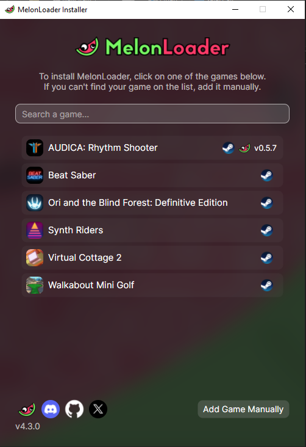
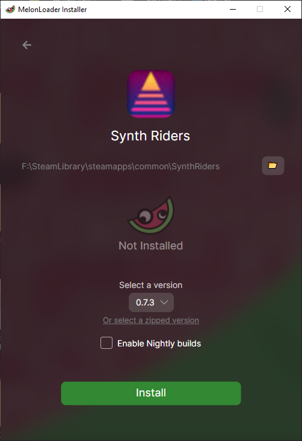
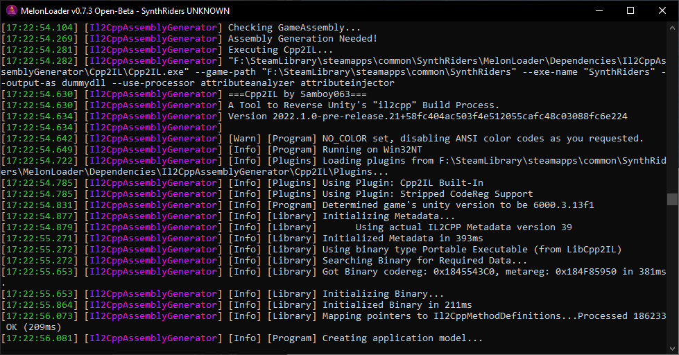
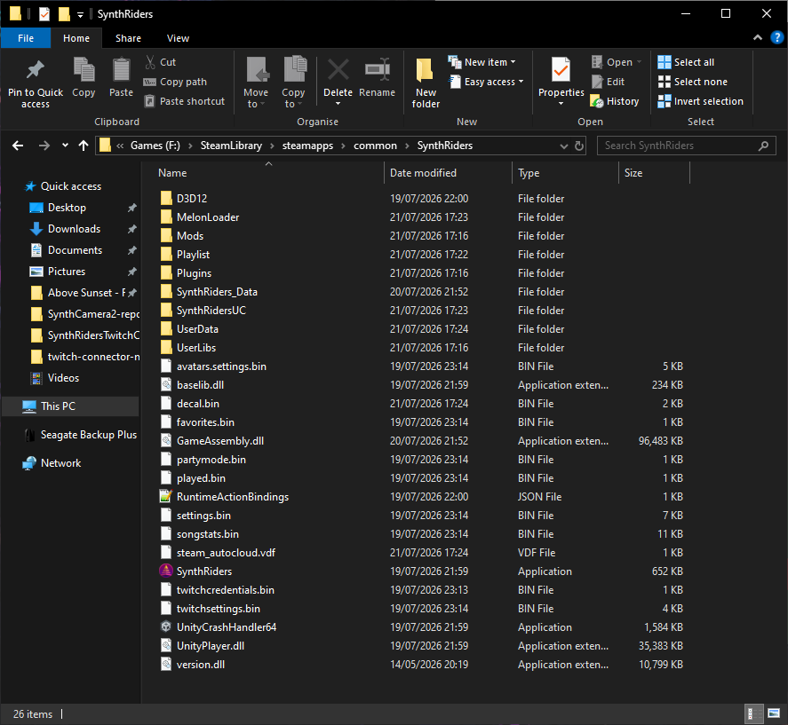

How to Install MelonLoader
MelonLoader is the universal mod loader for Unity games. This allows you to run community made mods and plugins on top of a game without touching the original files. This guide is the fastest path to get you started, when using the official automated installer. MelonLoader is what every mod on my Drops page runs on.
What you'll need
- A Unity game installed via Steam, Epic, or standalone
- Windows 7 / 8 / 10 / 11 (64-bit recommended), with admin rights
.NET 6.0 Desktop Runtimeis required for Il2Cpp games (most modern Unity titles)- The game fully closed before you install or update MelonLoader
Installation
Download the installer
Head to the MelonLoader.Installer releases page and download the latest MelonLoader.Installer.exe.
Run the installer and select your game
Open the installer. Once open, click the GAME you want if it is found automatically or if it isnt found, click Add Game Manually then browse to your game's shortcut or its .exe inside the game install folder.

Choose a version
When asked to select a Version leave it on latest unless a mod needs/states to use an older version.

Install
Click INSTALL. The installer then copies version.dll, dobby.dll, and a MelonLoader folder into your game's install directory. This usally takes a few seconds. Once this is complete and you see a sucess message proceed to Step 5.
Launch the game once
Start the game normally. A second window — the MelonLoader console — should appear alongside it (alt-tab if you don't see it right away). If it shows up, MelonLoader is working.
Initializing...
Loaded 0 Mods, 0 Plugins
Ready.

This first launch also creates three folders inside your game directory like the one's listed below:
| Folder | What goes here |
|---|---|
| Mods | Mod .dll files |
| MelonLoader/Plugins | Plugin .dll files |
| UserData | Config files, save data for mods |
Download your Mods and Navigate to the Game's Root Folder
To install the mods you want, First download the mods from there respective sources. Once complete, we need to navigate to the games root folder. If it is a Steam game you can open the game in the Libary, next in the top right you will see a cog icon click this and mouse down to Manage in this menu click the option Browse Local Files this will take you to the game root folder where the .exe lives .
Add mods
To install the mods you have downloaded copy them and then drop/paste the mod files into Mods (or Plugins for plugins) and relaunch the game. No further setup needed for most mods. if a mod requires further setup please follow the mods installation guide.

Done
Thats it you have completed the setup and install your mods to your Unity based game. Congratulations!!!
Troubleshooting
Game won't launch after installing
You likely installed the wrong architecture. Re-run the installer and try the other option (x86 vs x64).
Crash on startup
Install or repair the .NET 6.0 Desktop Runtime.
Nothing showing up / mods not loading
Check the mod .dll is in Mods (not Plugins), and that the game was fully closed during install.
Uninstalling
- Close the game
- Delete
version.dllanddobby.dllfrom the game's install folder - Delete the
MelonLoaderfolder - (Optional, full clean removal) also delete
Mods,Plugins, andUserData